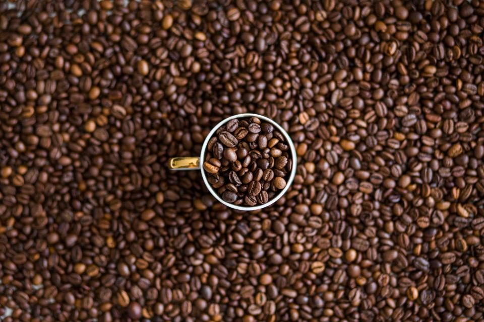

ポースコーヒー

制作側の連想
「ポ」の丸から、度数穴のカードへ
店名の由来は分かりません。制作側は、屋号の頭文字「ポ」の右上に付く小さな丸と、ご案内いただいた電話番号から、昔の公衆電話用カードの「度数穴」を連想しました。使うたびに穴が増えていく、あの紙のカードです。そこでこのサイトは、ページごとに丸い穴を1つずつ開けていくカードの作りにしています。制作側の連想で、お店の理念・由来とは無関係です。
カードの面(イメージ)
豆とカップの写真六枚。
写真はお店のものではありません。コーヒーまわりのイメージだけを伝えるフリー素材で、実際の店内や商品を写したものではありません。


ご案内
お店のこと(確認できたものだけ)
| 所在地 | 〒774-0017 徳島県阿南市見能林町上かうや−12−３ |
|---|---|
| 電話 | 070-8992-3525 |
| 営業時間 | 準備中 |
| 定休日 | 準備中 |
| ご予約 | 準備中 |
| 駐車場 | 準備中 |
| SNS | Instagram @porce.coffee |